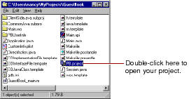
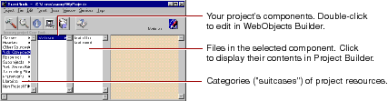

Setting Up WebObjects Applications
PATH
WebObjects 4.0 Documentation >
WebObjects Tools and Techniques
 Table of Contents
Table of Contents  Previous Section
Previous Section
The Structure of a WebObjects Application Project
On disk, your project is a folder whose name is the project name. The project folder contains all the files in your project. The file PB.project is the project file. You can open a project by double-clicking this file.

Project Builder displays a browser showing the contents of your project. The first column lists several categories of files that your project may contain. The following sections describe these categories.

Table of Contents  Next Section
Next Section